Community
International Visitors and Student-Led Lunch
20 Jun 2026 · Written by Abigail Hatto
Last week, we were also delighted to welcome several visitors.
Read full article →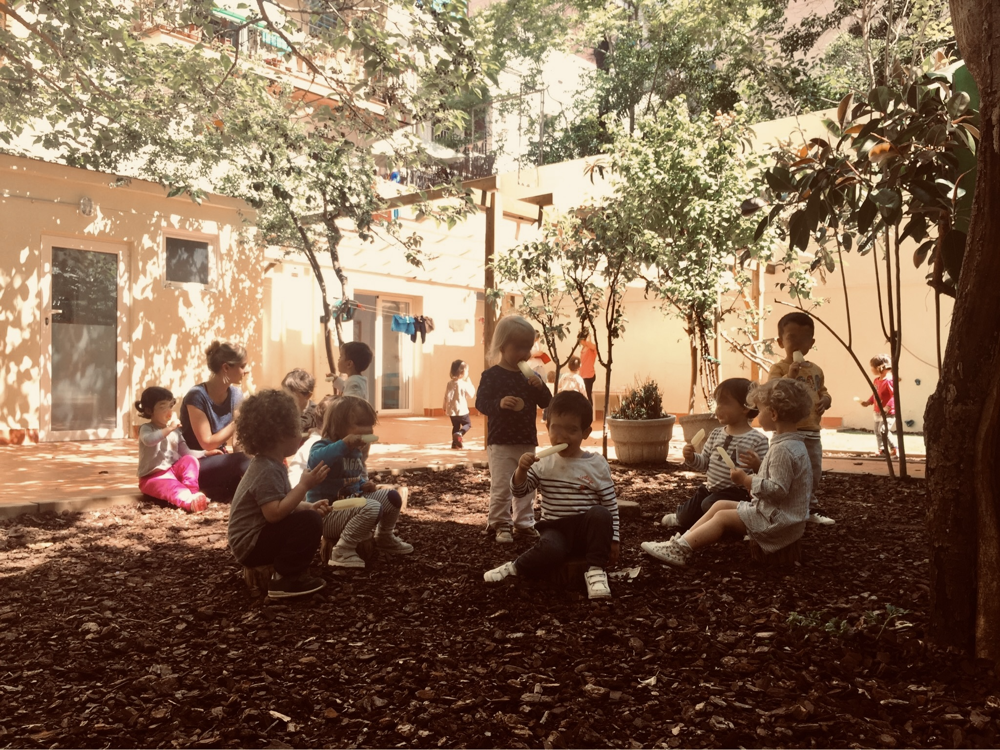
From 12 months to 14 years and beyond, BMS gives children the freedom, environment and guidance to discover who they are — and who they can become.
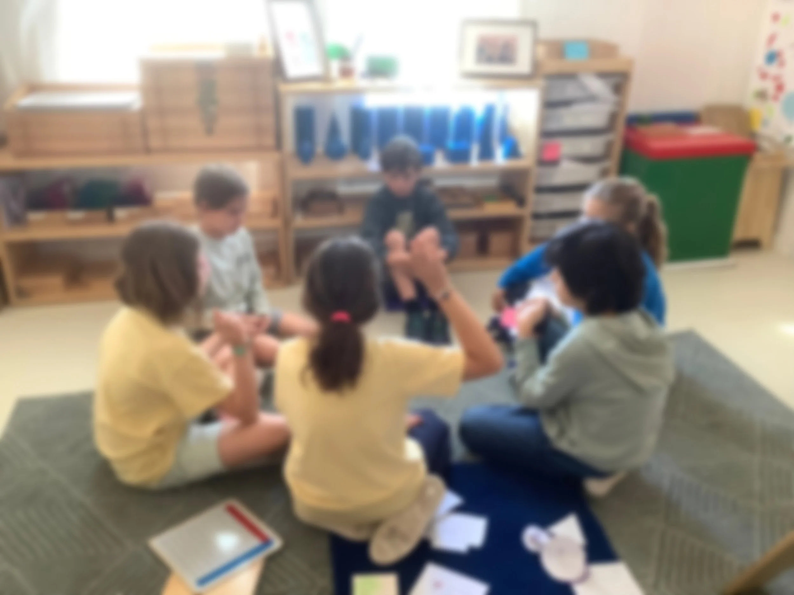
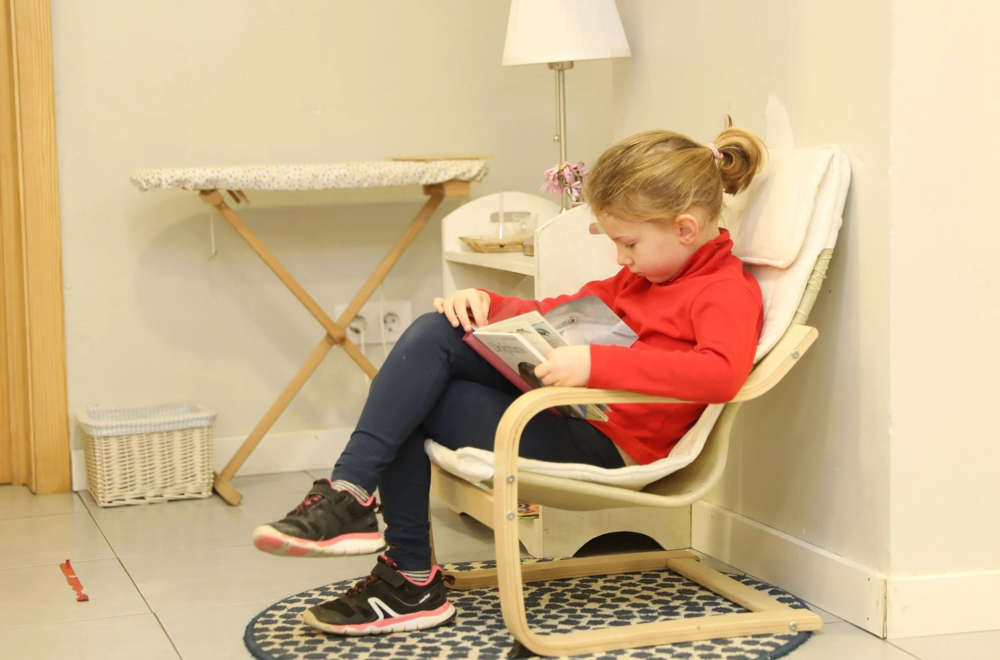
"Every child deserves the freedom to explore, the patience to grow at their own pace, and a community that believes in who they are becoming. That is what we strive for here, every single day."
Julianna Randé
Head of School
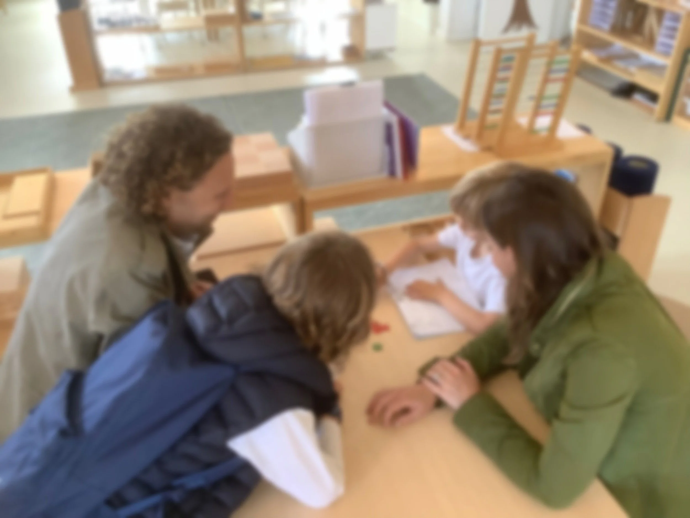
Montessori is best understood in person. Throughout the year we run events that are free and open to the public — the easiest first step for curious families, long before any application.
Meet our leadership team from anywhere in the world, hear how BMS works from Nido to Secondary, and ask anything — held regularly through the year.
Walk the Mas Pomaret garden and our prepared environments, and see what children do in a Montessori classroom on an ordinary morning.
Introductions to the Montessori approach for parents and educators — from the science of self-directed learning to Montessori at home.
"To provide an optimal environment for students to develop into prepared and fulfilled citizens of the world."
"We can't prepare them for everything, but we can prepare them for anything."
— MICHAEL WASKI
Children at the centre of every decision, supporting every student's holistic development.
As a means for a peaceful world — for oneself, others, and the environment we share.
For oneself, for others, and for the wider world.
Every staff member, student and parent shares a sense of connection and contribution to the BMS mission and vision. This is what makes BMS a community, not just a school.
Practical and emotional skills that promote educational and social independence at every stage.
Each stage of development has its own prepared environment, trained guides, and curriculum — built around how children actually grow.
A calm nest for babies to explore freely, develop motor skills, and experience their first community outside home.
Language, independence, social interaction and fine motor refinement in a toddler-sized world of possibility.
Self-directed work, practical life, grace and courtesy. Children choose their activities and learn to own their pace.
Cosmic Education, deep inquiry, real-world projects. Children build knowledge and learn to lead themselves.
Opened Sept 2025 and currently growing cohort by cohort. Land, enterprise, and community at the heart of adolescent learning.
Curriculum, daily rhythm and outcomes for each programme — from Nido to Secondary — plus how Montessori depth meets recognised British standards.
Home is where you are respected and heard. Before the spaces, before the garden, what defines BMS is how children are treated: as whole people, listened to, taken seriously, with the school adapting to the child — never the other way around.
Every interaction at BMS starts from the same place: deep respect for the child. Adults speak to children at eye level, conflicts are resolved through dialogue, and each child's rhythm, interests and needs shape their path — because we adapt to the child, not the child to us.
Families tell us this is what they feel first when they walk in: children who are calm, confident, and genuinely heard.
The Mas Pomaret is one of the oldest Masies in Sarrià. The remaining 6,000 m² of heritage garden surrounds our Early Years and Secondary campuses. Children grow food, observe nature, and spend real time outdoors every day — not as a break from learning, but as the deepest kind of it.
For our Secondary students, agriculture and land-based work are woven into the programme. There is no other urban school in Barcelona — or barely anywhere — with a space like this.
See the campusesEnglish is the language that unites our community of 40+ nationalities. Children absorb Spanish and Catalan as a matter of daily life — not formal instruction. Communication is natural, and we celebrate the richness that other languages and cultures bring to our understanding of the world.
BMS is a micro-society. Children learn to navigate complexity, resolve conflict, and support one another in a real, mixed-age community — skills that no classroom exercise can replace.
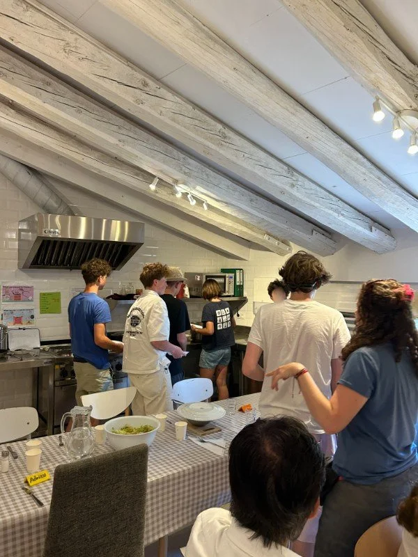
Our two in-house chefs prepare seasonal, nutritious meals in our own kitchen every day. Children eat together in a shared dining space — a Montessori practical life experience in itself. Menus accommodate all dietary needs and are developed in partnership with Ametller Origen.
Sitting down together to eat is not logistics. It is community.
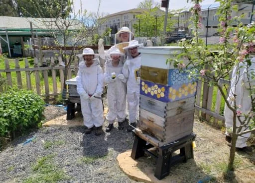
Opened in September 2025 and growing to 18 cohort by cohort, our Adolescent programme is built around what this age actually needs: real work, real responsibility, and a real community. Students run enterprises, work the land in the Mas Pomaret garden, and connect their academic studies — guided by specialist teachers, including doctorate-level guides in Sciences and Humanities — to projects that matter.
It is the natural continuation of the Montessori journey: the same principles of independence and purpose, scaled to young adults preparing for life beyond school.
Discover SecondaryBMS is not an adapted conventional school. Every element — from the environment to the staff ratios — is built from Montessori principles from the ground up.
AMI training, neuroscience research, and decades of Montessori experience from across the world — meet the Executive Committee, Senior Leadership, guides and Advisory Board.
"A team of highly professional educators, kind people who are very approachable. You can feel the Montessori spirit the moment you walk in." — Joan-Ignasi, BMS Parent
We welcome families from all backgrounds who share our values of respect, curiosity, and community. Places are limited — we recommend expressing interest early, especially for Early Years environments.
We have limited spaces across all year groups. Early Years spaces (Nido, Infant Community, Children's House) typically fill first.
More Information Book a Campus Visit See 2026–27 FeesBarcelona Montessori School families are open-minded, inclusive and respectful, with an international perspective. They are thoughtful parents interested in the long-term wellbeing of their children — families who question traditional models of education and are open to alternatives. Above all, our community wants a more peaceful future, a better local community, and a better world.
Enter your child's date of birth to see their year group in the British Montessori curriculum.
Both sites sit in the Sarrià neighbourhood, within walking distance of each other — Carrer Pomaret 25 for Early Years & Secondary, Carrer de l’Esperança 13 for Primary — sharing staff, resources and a single programme.
Term dates, holidays and school closures for the 2026–27 year. Add them to your phone in one tap, or download the full printable calendar.
Tuition, catering and material fees for every programme from Nido to Secondary — plus sibling discounts and everything that is included.
Life at BMS, written as it happens — classroom stories, celebrations, Montessori insights and news from every environment. Latest posts:
Last week, we were also delighted to welcome several visitors.
Read full article →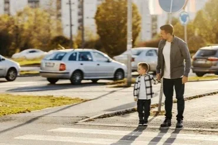
As we approach the end of another school year, many families are looking forward to a slower pace, holidays, and more time together. While summer is certainly a time for rest, fun, and ma…
Read full article →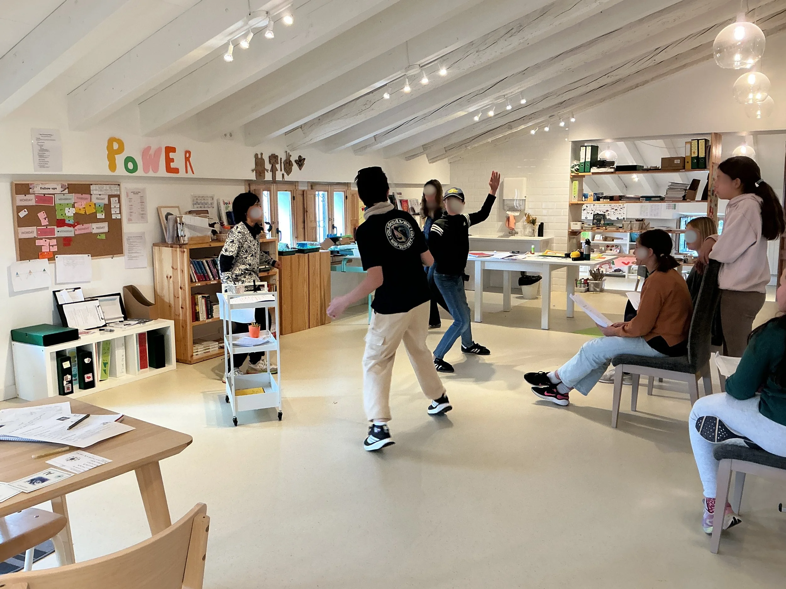
As part of their English studies, the students in the Adolescent Community prepared their own adaptation of Romeo and Juliet. After weeks of preparation and rehearsal, they decided to inv…
Read full article →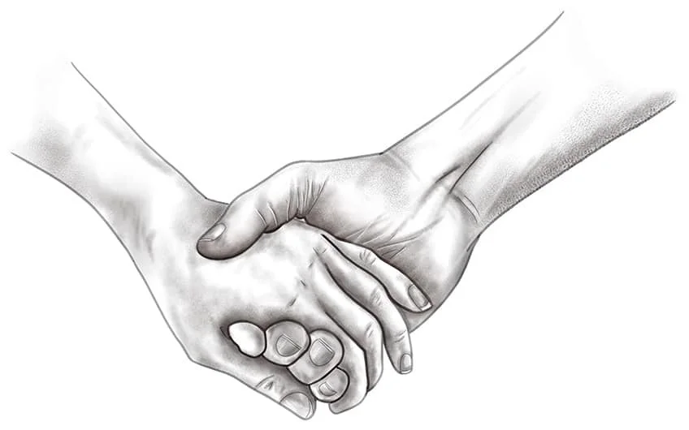
This speech was made at the End of Year Party in 2026 by Julianna, the new Head of School.
Read full article →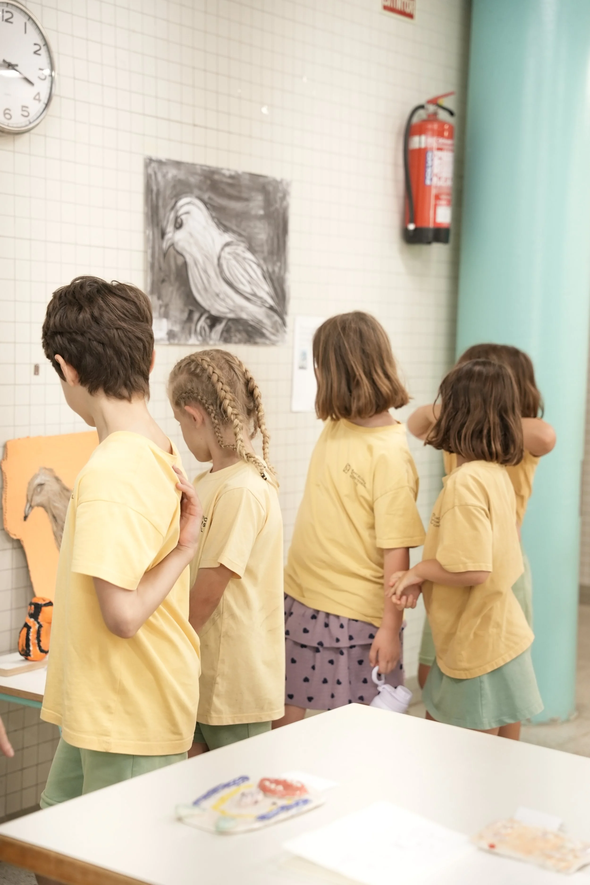
Barcelona Montessori School held its very first Art Show! The purpose of the exhibition was to showcase our students' creativity and artistic talents. The event took place in the Esperanç…
Read full article →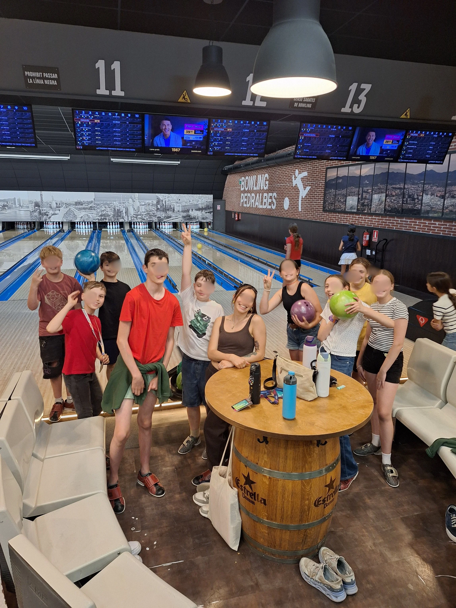
On June 11th, our Year 7’s enjoyed one of the most anticipated traditions of their final year in the Montessori Primary Program: a special overnight stay at school and an after-school out…
Read full article →Current vacancies, staff benefits, and Montessori adolescent guide training through the Barcelona Montessori Training Center.
Pomaret 25
Carrer Pomaret 25, 08017 Barcelona
930 272 655
Esperança 13
Carrer de l'Esperança 13, 08017 Barcelona
931 420 972 · WhatsApp
info@barcelonamontessorischool.com
We reply within 1–2 working days.
Admissions enquiriesTours run on weekday mornings during term time. Tim or a member of the leadership team will show you around.
More InformationBMS is both a school and a training community. We welcome educators, assistants, guides, specialists and future Montessori practitioners who want to grow in an international, child-centred environment.
We look for adults who respect the child, value observation, communicate warmly with families and contribute to a peaceful, prepared environment. Roles may include Montessori guides, classroom assistants, specialists, SEN support, operations and administration.
Barcelona Montessori Training Center is linked to BMS and offers AMS Secondary I–II training in partnership with CMStep, supporting adults who want to work with adolescents aged 12–18.
Families, professionals and local partners enrich the children’s experience through talks, projects, Going Outs, practical work, farm experiences and community partnerships.
Our school works with education, Montessori, food, sport, social-impact and specialist partners who enrich school life and support the development of the project.

 Montessori MUNModel United Nations
Montessori MUNModel United Nations
 Ametller OrigenSchool catering
Ametller OrigenSchool catering
 FundesplaiCommunity & services
FundesplaiCommunity & services
 BMTCTeacher training
BMTCTeacher training
 Carrera contra el HambreSolidarity project
Carrera contra el HambreSolidarity project
 Alella Green TechAdolescent farm work
Alella Green TechAdolescent farm work
 VidiaCommunity partner
VidiaCommunity partner
 Montessori SportsMovement & PE
Montessori SportsMovement & PE
 AMSAmerican Montessori Society
AMSAmerican Montessori Society
Logo and image files should be stored locally in the GitHub repository under the images/ folder, so the page does not depend on any external media library.